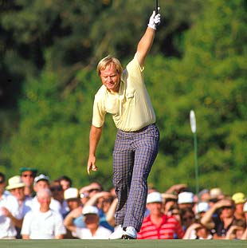

The Masters Tournament is held annually at Augusta National, one of the most prestigous golf courses in the country. Augusta National's hallowed grounds have been walked by both past and present heroes of the sport. Golfers such as Jack Nicklaus, Arnold Palmer, Tiger Woods, and Phil Mickelson have experienced The Masters. Few have had the privilege of wearing the green jacket though, which serves as one of the tournament's trophies.
| Past Champions | Tiger Woods | Jordan Spieth | Sergio Garcia |
|---|---|---|---|
| Height | 6 ft 1 in | 6 ft 1 in | 5 ft 10 in |
| Weight | 185 lb | 185 lb | 161 lb |
These three champions have each had unique careers, but are united by one feat: winning the masters. Regardless of nationality, age, or background, the Masters distinguishes truly great golfers.
The honor that accompanies being a Master's champion is unmatched by any other golf tournament. There have been many champions, but the champion's of the last 3 years are as listed below:
For more information on the Masters, you may visit: The official Masters website.